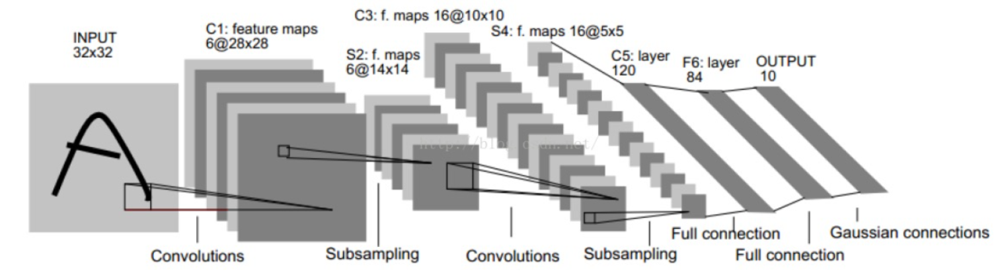

LeNet-5
卷积神经网络是一种特殊的多层神经网络。与几乎所有其他神经网络一样，它们都使用一种反向传播算法进行训练。而LeNet-5是一个最基础的卷积神经网络(CNN)模型,它主要用于手写体的识别和机印字符识别。
LeNet-5模型框图

先说明一下特征图大小计算公式：
输入:32*32的手写体数字图片，其中包含0~9，也就相当于10个类别。
输出:分类结果，0~9中的一个数，也就是一个类别。
LeNet-5不包括输入层一共有七层，MNIST数据集是28x28的，是希望潜在的明显特征如笔画断点或角能够出现在最高层特征检测子感受野（receptive field）的中心。因此在训练之前需要对28x28的图像加上paddings=2。七层神经网络依次为：
1、C1卷积层：
这一层中，输入就是32x32x1的原始图像，该层使用的卷积核大小为5x5，使用6种不同参数的卷积核。因此，输出6个特征图(feature map)，每个特征图的大小为28x28，即输出特征图大小为28x28x6。该卷积层共有：5*5*1*6+6=156个参数,加的6为卷积后的偏置项参数。本层所拥有的节点有28*28*6=4704个节点， 而本层的每一个节点都是经过一个5*5的卷积和一个偏置项计算所得到的，5*5+1=26，所以本层卷积层一共有4704*26 = 122304个连接。
2、S2池化层：
该层的输入是C1层的输出，即是一个28x28x6的特征图,也就是一个矩阵。卷积神经网络中，常用的池化层有最大池化和平均池化，所使用的核大小为2*2,卷积操作步长为2，也就是每四个相邻的元素经池化之后只会输出一个元素。因此经S2池化层之后，输出的特征图大小为14x14x6，池化层并不会改变输入特征图的通道数。
3、C3卷积层
这一层的输入是一个14x14x6的矩阵，C3层一共有16卷积核，每一个卷积核的大小为5x5，默认卷积核深度和卷积对象是一致的，因此，输出特征图的尺寸为10x10x16。
4、S4池化层
S4层的池化方式与S2层相同，输入是10x10x16，输出是5x5x16。所以，S4层一共有16*2=32个参数，与S3层一共有（4+1）*5*5*16=2000个连接。
5、C5卷积层
输入特征图大小为5x5x16，C5层共有120个卷积核，每个卷积核的大小还是5x5,与输入特征图大小相同,因此输出120个特征图，每个特征图的大小为1x1，即输出特征图的尺寸为1x1x120。
6、F6全连接层
将F6层与C5进行全连接，输入为120x1的向量，计算输入向量和权重向量之间的点积，再加上一个偏置，结果通过sigmoid函数输出。因为F6全连接层共有84个节点，因此输出为84x1的向量。
7、输出层(全连接层)
输出层共有10个节点，分别代表数字0~9的10个类别。采用的是径向基函数(RBF)的网络连接方式。每一个输出对应一个RBF函数，每一个RBF函数都有84维的输入向量，RBF的函数公式如下。每一个RBF函数都会有一个输出，最后输出层会输出一个10维的向量。
$$ y_i=\sum_j(x_j-w_{ij})^2 $$ 其中i=0~9，j=0~83。\(w_{ij}\)代表F6层第j个节点与输出层第i个节点的连接权重。RBF的输出值越接近于0，则分类结果越接近于i,表示当前网络输入的识别结果是i。
数据加载，load.py:
# data loading
# train image x label y
# test image x label y
import struct
import numpy as np
import cv2
# read image X
def load_image_fromfile(filename):
with open(filename, 'br') as fd:
# 读取图像的信息
header_buf = fd.read(16) # 16字节，4个int整数
# 按照字节解析头信息（具体参考python SL的struct帮助） 解包
magic_, nums_, width_, height_ = struct.unpack('>iiii', header_buf) # 解析成四个整数：>表示大端字节序，i表示4字节整数
# 保存成ndarray对象
imgs_ = np.fromfile(fd, dtype=np.uint8)
imgs_ = imgs_.reshape(nums_, height_, width_)
return imgs_
# read labels Y
def load_label_fromfile(filename):
with open(filename, 'br') as fd:
header_buf = fd.read(8)
magic, nums = struct.unpack('>ii' ,header_buf)
labels_ = np.fromfile(fd, np.uint8)
return labels_
lenet-5的构建，lenet5.py:
import torch
# layer
class Lenet5(torch.nn.Module):
# constructor function
def __init__(self):
super(Lenet5,self).__init__()
self.layer1 = torch.nn.Conv2d(in_channels=1, out_channels=6, kernel_size=(5,5),padding=2)
self.layer2 = torch.nn.Conv2d(in_channels=6, out_channels=16, kernel_size=(5,5),padding=0)
self.layer3 = torch.nn.Conv2d(in_channels=16, out_channels=120, kernel_size=(5,5),padding=0)
self.layer4 = torch.nn.Linear(120,84) #通常用于设置网络中的全连接层
self.layer5 = torch.nn.Linear(84,10)
# 重写 父类的方法 calculation
def forward(self,input):
# layer1
o = self.layer1(input) # N*1*32*32====>N*6*28*28
o = torch.nn.functional.relu(o)
o = torch.nn.functional.max_pool2d(o,kernel_size=(2,2)) # N*6*28*28====>N*6*14*14
# layer2
o = self.layer2(o) # N*6*14*14====>N*16*10*10
o = torch.nn.functional.relu(o)
o = torch.nn.functional.max_pool2d(o,kernel_size=(2,2)) # N*16*10*100====>N*16*5*5
# layer03
o = self.layer3(o) #N*16*5*5====>N*120*1*1
o = torch.nn.functional.relu(o)
o = o.squeeze() # N*120*1*1====>N*120
# layer04
o = self.layer4(o) # N*120====>N*84
o = torch.nn.functional.relu(o)
# layer05
o = self.layer5(o) # N*84====>N*10
return o
训练文件，train.py:
# 加载数据
# 训练模型
# 保存模型
import torch
from lenet5 import Lenet5
import load
# train_data
train_x = load.load_image_fromfile('./第三次实训/L05/digit/data/train-images.idx3-ubyte')
train_y = load.load_label_fromfile('./第三次实训/L05/digit/data/train-labels.idx1-ubyte')
# test_data
test_x = load.load_image_fromfile('./第三次实训/L05/digit/data/t10k-images.idx3-ubyte')
test_y = load.load_label_fromfile('./第三次实训/L05/digit/data/t10k-labels.idx1-ubyte')
##### N*28*28 ##### .view() change dim ##### N*1*28*28 #####
x = torch.Tensor(train_x).view(train_x.shape[0],1,train_x.shape[1],train_x.shape[2])
y = torch.LongTensor(train_y)
t_x = torch.Tensor(test_x).view(test_x.shape[0],1,test_x.shape[1],test_x.shape[2])
t_y = torch.LongTensor(test_y)
# DataLoader
train_dataset = torch.utils.data.TensorDataset(x,y)
test_dataset = torch.utils.data.TensorDataset(t_x,t_y)
# for in train_loader 2000 batch_size
train_loader = torch.utils.data.DataLoader(dataset=train_dataset,shuffle=True,batch_size=2000)
test_loader = torch.utils.data.DataLoader(dataset=test_dataset,shuffle=True,batch_size=10000)
model = Lenet5()
epoch = 60
cri = torch.nn.CrossEntropyLoss()
# 创建优化器（指定学习率）
opt = torch.optim.Adam(model.parameters(),lr=0.001)
# epoch
for e in range(epoch):
# batch
for data,target in train_loader:
opt.zero_grad() # 导数清零
out = model(data) # forward()
loss = cri(out,target)
loss.backward()
# update weight
opt.step() # 更新权重
with torch.no_grad(): #这里我们只是想看一下训练效果，不需要用来反向传播更新网络，节约内存
for data,target in test_loader:
y_ = model(data)
y_ = torch.nn.functional.log_softmax(y_,dim=1)
predict = torch.argmax(y_,dim=1)
c_rate = (predict==target).float().mean()
print(F"轮数：{e} ---- 准确率：{c_rate}")
state_dict = model.state_dict()
torch.save(state_dict,'./第三次实训/L05/digit/data/lenet.pth')
测试手写体识别，recognize.py:
import torch
from lenet5 import Lenet5
import numpy as np
model = Lenet5()
state = torch.load('./第三次实训/L05/digit/data/lenet.pth')
model.load_state_dict(state)
import cv2
# img = cv2.imread('./第三次实训/L05/digit/img.png') # 中文路径会报错
img= cv2.imdecode(np.fromfile('./第三次实训/L05/digit/img.png', dtype=np.uint8), -1)
# imdecode读取的是rgb，如果后续需要opencv处理的话，需要转换成bgr，转换后图片颜色会变化
img = cv2.cvtColor(img, cv2.COLOR_RGB2BGR) #cv2.imread读取的图片效果一致
img = cv2.cvtColor(img,cv2.COLOR_BGR2GRAY)
img = cv2.resize(img,(28,28)) #resize
img = torch.Tensor(img).view(1,1,img.shape[0],img.shape[1])
y_ = model(img) #N[10]
y_ = torch.nn.functional.log_softmax(y_,dim=0)
predict = torch.argmax(y_,dim=0)
print(predict.numpy())